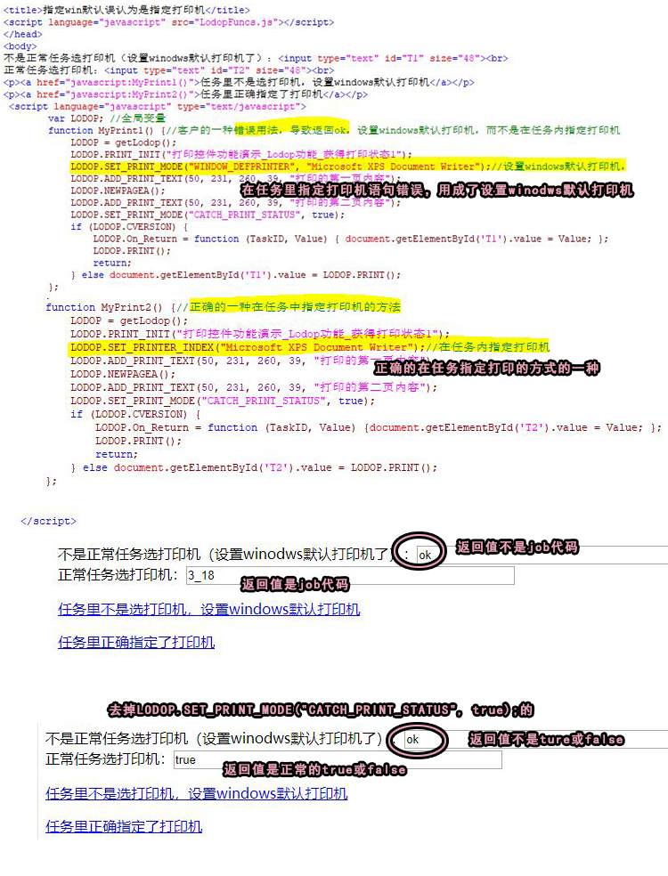

PRINT没有返回job代码或truefalse，返回ok的一种情况
之前也有其他客户问过，PRINT获取是否加入队列，返回的不是true或false，而是ok。或加上LODOP.SET_PRINT_MODE("CATCH_PRINT_STATUS", true);，返回的不是job代码，而是ok。
之前的客户没有发代码，所以我让他们测试样例，样例右键查看源码，对照样例排查，估计这些人对照样例自己排查到了，这次有客户直接发了自己的代码，知道了为什么那些客户说返回ok的原因，是因为一个错误用法。
原因是在任务里指定打印机语句错误，用成了设置winodws默认打印机。
如果想有设置winodows打印机的功能，可以单独一个按钮等作为设置win默认打印机的功能。
而在打印任务里指定打印机，则需要用指定打印机的语句，具体可参考样例7，或样例5的第2步。
设置windows默认打印机在样例5的第7步，估计是参考样例的时候没有注意样例5的第3步的那个获取本机打印机列表，指定打印机的方法。而是误认为这个设置windows默认打印机为指定打印机。
简短问答：
1.为什么print返回的不是true或false，而是ok?
参考样例4，35 http://www.c-lodop.com/demolist/PrintSample35.html
对照样例排查下，样例右键查看源码。
指定打印机语句是怎样指定的，是用的样例7的方式吗，SET_PRINTER_INDEX这种。
发一下代码。
是否用了SET_PRINT_MODE("WINDOW_DEFPRINTER", "设置windows默认打印机这种。
如果要在任务中指定打印机，用样例7那种，例如SET_PRINTER_INDEX这种。
2..为什么print加CATCH_PRINT_STATUS返回的不是job代码，而是ok？
样例45 http://www.c-lodop.com/demolist/PrintSample45.html
样例右键查看源码，对照样例排查下。
--简短问答结束----
测试代码：
之前也有其他客户问过，PRINT获取是否加入队列，返回的不是true或false，而是ok。
或加上LODOP.SET_PRINT_MODE("CATCH_PRINT_STATUS", true);，返回的不是job代码，而是ok。
之前的客户没有发代码，所以我让他们测试样例，样例右键查看源码，对照样例排查，估计这些人对照样例自己排查到了，这次有客户直接发了自己的代码，知道了为什么那些客户说返回ok的原因，是因为一个错误用法。
原因是在任务里指定打印机语句错误，用成了设置winodws默认打印机。
如果想有设置winodows打印机的功能，可以单独一个按钮等作为设置win默认打印机的功能。
而在打印任务里指定打印机，则需要用指定打印机的语句，具体可参考样例7，或样例5的第2步。
设置windows默认打印机在样例5的第7步，估计是参考样例的时候没有注意样例5的第3步的那个获取本机打印机列表，指定打印机的方法。而是误认为这个设置windows默认打印机为指定打印机。
简短问答：
1.为什么print返回的不是true或false，而是ok?
参考样例4，35 http://www.c-lodop.com/demolist/PrintSample35.html
对照样例排查下，样例右键查看源码。
指定打印机语句是怎样指定的，是用的样例7的方式吗，SET_PRINTER_INDEX这种。
发一下代码。
是否用了SET_PRINT_MODE("WINDOW_DEFPRINTER", "设置windows默认打印机这种。
如果要在任务中指定打印机，用样例7那种，例如SET_PRINTER_INDEX这种。
2..为什么print加CATCH_PRINT_STATUS返回的不是job代码，而是ok？
样例45 http://www.c-lodop.com/demolist/PrintSample45.html
样例右键查看源码，对照样例排查下。
--简短问答结束----
测试代码：
<script language="javascript" src="LodopFuncs.js"></script> </head> <body> 不是正常任务选打印机（设置winodws默认打印机了）：<input type="text" id="T1" size="48"><br> 正常任务选打印机：<input type="text" id="T2" size="48"><br> <p><a href="javascript:MyPrint1()">任务里不是选打印机，设置windows默认打印机</a></p> <p><a href="javascript:MyPrint2()">任务里正确指定了打印机</a></p> <script language="javascript" type="text/javascript"> var LODOP; //全局变量 function MyPrint1() {//客户的一种错误用法，导致返回ok，设置windows默认打印机，而不是在任务内指定打印机 LODOP = getLodop(); LODOP.PRINT_INIT("打印控件功能演示_Lodop功能_获得打印状态1"); LODOP.SET_PRINT_MODE("WINDOW_DEFPRINTER", "Microsoft XPS Document Writer");//设置windows默认打印机， LODOP.ADD_PRINT_TEXT(50, 231, 260, 39, "打印的第一页内容"); LODOP.NEWPAGEA(); LODOP.ADD_PRINT_TEXT(50, 231, 260, 39, "打印的第二页内容"); LODOP.SET_PRINT_MODE("CATCH_PRINT_STATUS", true); if (LODOP.CVERSION) { LODOP.On_Return = function (TaskID, Value) { document.getElementById('T1').value = Value; }; LODOP.PRINT(); return; } else document.getElementById('T1').value = LODOP.PRINT(); }; function MyPrint2() {//正确的一种在任务中指定打印机的方法 LODOP = getLodop(); LODOP.PRINT_INIT("打印控件功能演示_Lodop功能_获得打印状态1"); LODOP.SET_PRINTER_INDEX("Microsoft XPS Document Writer");//在任务内指定打印机 LODOP.ADD_PRINT_TEXT(50, 231, 260, 39, "打印的第一页内容"); LODOP.NEWPAGEA(); LODOP.ADD_PRINT_TEXT(50, 231, 260, 39, "打印的第二页内容"); LODOP.SET_PRINT_MODE("CATCH_PRINT_STATUS", true); if (LODOP.CVERSION) { LODOP.On_Return = function (TaskID, Value) {document.getElementById('T2').value = Value; }; LODOP.PRINT(); return; } else document.getElementById('T2').value = LODOP.PRINT(); }; </script> </body>
图示 ：
